《最强大脑》第四季第五期中的一个挑战项目叫“分形之美”。它以分形几何中的经典集合——朱利亚集（简称J集）为研究对象，以此推演图形中的数字逻辑。J集是由一个迭代函数
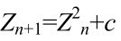
来定义的，其中c为复数，根据c=x+yi来确定。当c确定并固定y0的值后，可以得到一系列Z值，也就得到了一些不断变化的图像。节目组公布了Z0和Z24的图像，选手们将在其中间部分的23张，根据嘉宾指定的3张图像来确定相应的数值。这个项目考察选手的推理能力和计算能力，有一定难度。但广大观众对什么是J集，什么是分形尚缺乏足够的了解，这不免与节目组“让科学流行起来”的初衷有一定差距，未能达到理想效果。
为此，笔者对什么是分形，什么是J集，以及分形几何的核心——分数维作一简单的介绍。
1967年，在美国《科学》杂志上出现了一篇划时代的论文《英国的海岸线有多长？统计自相似性与分数维数》，论文作者曼德布罗特是当代的一位美籍法国数学家和计算机专家。他的答案颇出人意料，他认为无论你做得多么认真细致，都不可能得到准确答案，因为根本不会有准确答案。
关于“海岸线有多长”的问题看似很简单，其中却存在一些问题。测量数值保留的精确度不同，测出的结果会有较大区别。如结果精确到千米，则短于1千米的迂回曲折都被忽略掉了。若精确到米，则能多测出一些迂回曲折，数值将变大。精确度越高，测得的数值愈大，这些愈来愈大的数值将趋于一个确定值，这个极限值就是海岸线的长度。
但是曼德布罗特发现：当精确度不断提高时，所得的值是无限增大的，他认为海岸线的长度是不确定的，或者说在一定意义上海岸线是无限长的。为什么呢？答案就在于海岸线的极不规则和极不光滑。我们知道，经典几何研究规则图形，平面解析几何研究一次和二次曲线，微分几何研究光滑的曲线和曲面。传统上总是将自然界中存在的大量不规则形体近似规则后再进行处理，就像在测量海岸线时，总会先把海岸线折线化（无论是有意还是无意），然后得出一个有意义的长度值。但曼德布罗特突破了这一点。
海岸线长度问题最初是由曼德布罗特在英国数学家理查逊的遗稿中发现的，这个问题引起了他极大的兴趣，开始潜心研究。当初，理查逊为了了解一些国家锯齿形的海岸线长度，查了西班牙、葡萄牙、比利时和荷兰的百科全书，结果发现书上在估计同一国家的海岸线长度时，竟然有百分之二十的误差。理查逊指出，这种误差是因为他们使用不同精度的量尺所导致的。他同时发现海岸线长度L与量尺精度s的关系——log（1/s）与log（L）呈线性关系。
理查逊得出了一个关于边界长度的经验公式，曼德布罗特敏锐地发现该公式中的一个参数可以用来描述海岸线的特征，他称之为“量规维数”，这就是分数维数之一。自此，曼德布罗特的分形概念开始萌芽生长。
谈到分形，就不得不提非线性的概念。所谓线性是直线的属性，也意味着系统的简单性；而非线性是指变量之间的数学关系，不是直线，而是曲线、曲面或不确定的属性。分形满足非线性的概念，由于其本身的复杂性，至今没有一个确切的科学定义。英国数学家法尔科内认为，应该将分形看作具有以下特征的集合F。
① F具有精细结构，即在任意小的比例尺度内包含整体。
② F是不规则的，以至于不能用传统的几何语言来描述。
③ F通常具有某种自相似性。
④ F在某种方式下定义的“分数维”通常大于F的拓扑维数。
⑤ F的定义通常是非常简单的，或许是递归的。
简单来说，分形的系统具有自相似性和分数维数。自相似性容易辨认，例如一块磁铁中的每一部分都像整体一样具有南北两极，可以不断分割下去，每一部分都具有和整体相同的磁场。在适当放大或缩小几何尺寸时，这种自相似的特性不变。具有自相似性的形态广泛存在于自然界中，如连绵的山川、飘浮的云朵、岩石的断裂口、粒子的布朗运动，及树冠、叶子、花菜、大脑皮层等。分形的概念也早已从最初所指的形态或结构上具有自相似性的几何对象的狭义分形扩展到了功能、信息、时间、空间上等具有自相似性的广义分形。连《格列佛游记》中也有4句诗，精彩地给出了一个“自相似”的例子。
啊！博物学家看到一只跳蚤
有一只更小的跳蚤在它身上吸血
再又看到更小的跳蚤在小跳蚤身上吸血
如此直至无穷……
分形结构或分形点集是几维的？在欧氏空间中，欲确定一条直线上点的位置只需一个坐标值，确定平面上一点的位置需要两个坐标值，确定我们生活空间中一点的位置需要3个坐标值。用一组实数（x1，x2，…，xn）来确定一个点的位置所形成的空间，称为n维空间。可见，在我们的心目中，维数即确定点的位置所需要的坐标数目。这种通常的维数概念受到了分形几何的挑战，必须加以推广。
事情要追溯到1890年，意大利数学家皮亚诺（1858—1932）发明了一种曲线，可以装满一个正方形区域。如果作为点集那么此曲线是一维的，它装满正方形区域后就应该说是二维的。这种自相矛盾的结论是怎么回事呢？我们先来看看皮亚诺是如何构造这种奇怪的曲线的。
把单位正方形R划分成4个全等的一级正方形，按顺时针方向依次历经这4个小区间，沿图11-1（a）中折线走遍一级正方形的中心。再把每个一级正方形划分成4个二级正方形，并行遍所有的二级正方形，具体过程如下。先行遍一级1号正方形中的4个二级正方形，再进入一级2号正方形，行遍一级2号正方形内4个二级正方形后，进入一级3号正方形，行遍其4个二级正方形后进入一级4号正方形，且行遍其中的二级正方形［如图11-1（b）所示］。图11-1（c）画的是n=3的情况，令n→+∞，则得一连续曲线L，L装满了单位正方形R。
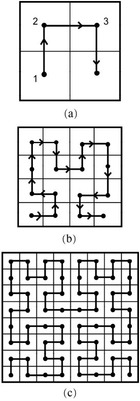
图11-1
1919年，德国著名的数学家豪斯道夫（1868—1942）提出了分数维数的概念。其实从理论上讲允许各种不同的维数定义存在，但每种维数定义必须满足欧氏空间的传统维数定义。
有一种维数叫“盒子维”，设一个有界点集S属于m维欧氏空间，我们把m维欧氏空间划分成棱长为ε的m维小方盒，再数一数含S中点的小盒子的数目N（ε），则称
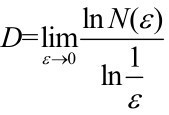
为S的盒子维数。用该定义可以求正方形区域的维数：把单位正方形区域划分成棱长为
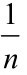
的n2个方盒子，即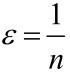
，代入上式，得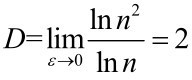
。类似地，可用上述定义求得线段是一维的，立方体是三维的，可见这种维数定义不违反传统维数的结论。用盒子维来计算皮亚诺曲线的维数，得到这条曲线所形成的点集恰为二维的，从而克服了传统观点中皮亚诺曲线与正方形区域之间维数的矛盾。事实上，对于皮亚诺曲线，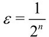
，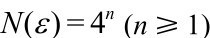
，有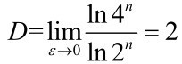
还有一种所谓的相似形维数，若某图形可由边长缩小为
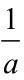
的b个自相似图形拼成，则定义其维数为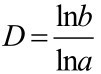
。例如，图11-2所示的柯克曲线是由一段单位直线逐次应用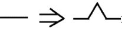
变换而成的。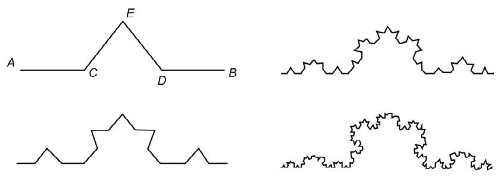
图11-2
柯克曲线的构造过程如下：取长为1的线段AB，AB的三等分点分别是 C、D，把线段从 C、D 点断开，从此处凸起一个折线 CED，使
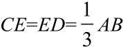
，再以AC、CE、ED、DB分别扮演AB的角色，依次类推。在这里，柯克曲线的a=3，b=4，于是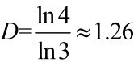
。这里就出现了非整数维数这样一类新事物，柯克曲线维数的准确值是一个无理数。由此可见，维数可以是非负整数，也可以不是整数，甚至可以是无理数。

下面再介绍一个几何分形图，它是由波兰数学家谢尔宾斯基制作的，如图11-3所示。谢尔宾斯基分形图的构造十分简单，大家见图自明。下面来计算它的维数。从图11-3的左图开始，将三角形的边长每次缩小1/2，然后把3个小图放在一起，如此迭代下去，就得到一个分形的谢尔宾斯基三角形，其维数是
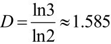
。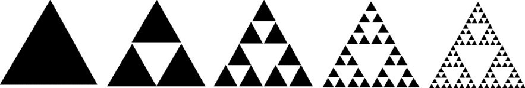
图11-3
必须指出，上面介绍的只是最简单的情况，分数维数的计算往往是“一事一议”，没有统一的法则和公式。目前的研究已经算出了许多自然分形和人工分形的分数维数，如下所示。
海岸线的维数：1＜D＜1.3
山地表面维数：2.1＜D＜2.9
河流水系维数：1.1＜D＜1.85
云的维数：D=1.35
金属断裂纹的维数：D=1.27±0.02
人的肺的维数：D≈2.17
血管直径分布的维数：D≈2.3
人脑表面的维数：2.73＜D＜2.79
人的脑电图的维数：1.9＜D＜2.4
本章一开始，我们就说起过J集即朱利亚集，那么朱利亚是何许人也？朱利亚可归于神童一类，出生于阿尔及利亚，8岁时第一次进小学就直接读五年级。后来，朱利亚获得奖学金到巴黎学习数学。在第一次世界大战期间，法国卷入战争，21岁的朱利亚在一次战斗中受了重伤，被炸掉了鼻子。后长期在医院接受治疗，他仍以顽强的毅力研究数学。在医院的几年中他完成了博士论文，25岁那年，他在《纯粹数学和应用数学》杂志上发表了描述函数迭代的长达300页的杰作，因之一举成名。但不幸的是，几年后这个有关迭代函数的工作似乎被人们遗忘了，一直到20世纪七八十年代，由曼德布罗特奠基的分形几何被广泛应用到各个领域后，朱利亚的名字才因此传播开来。
J集研究的是函数f(z)=z2+c（等价于
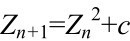
）迭代的结果。为了说明它的迭代过程，先取c为实数，方便大家理解。例如当c=0.75，并取z0=1，我们得到：z1=f (1.0)=1.02-0.75=0.25
z2= f (0.25)=0.252-0.75=-0.6875
z3= f (-0.6875)=( -0.6875)2-0.75=-0.2773
z4= f (-0.2773)=( -0.2773)2-0.75=-0.6731
z5=f (-0.6731)=( -0.6731)2-0.75=-0.2970
…
显然，这些结果都在坐标轴的x轴上，但当c取复数a+ib时，迭代结果就在一个复平面上。对于有的初始值z0，z很快趋向无穷大，有的则不是。设想给复平面上的点着色，凡是趋向无穷大的着彩色，反之，则着黑色，其边界就是J集。也就是说，对于有些z0，函数值始终约束在某一范围内，满足该情况的所有初始值z0的集合称为J集。
借助于计算机，可以把它们画出来，每一个c有它自己的J集。它的形状简直复杂得令人难以置信，有位法国画家说出了内心的惊叹：“它们有的像天上的浮云，有的如多刺的荆棘，有的则像节日之夜，烟火熄灭后仍在空中飘动闪烁的火星……其足以使许多画家掷笔兴叹，顶礼膜拜。”
上面提到的非线性迭代公式
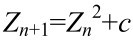
，正是后来被曼德布罗特所研究的。现在，就来说说曼德布罗特其人。本华·曼德布罗特（1924—2010）是一位成衣批发商和牙医的儿子，幼年时喜爱数学，特别是几何。后来，他的研究范围更加广泛，包括棉花价格、股票涨落、语言中的词汇分布等，从物理学、天文学、地理学，到经济学、生理学……都有所涉及。他一直在IBM公司做研究，又曾在哈佛大学教授经济学，在耶鲁大学教授工程，在爱因斯坦医学院教授生理学。也许正是这些风马牛不相及的多个领域的研究经验，使曼德布羳狕创立了跨学科的分形几何。他被誉为20世纪后半叶少有的影响深远而广泛的科学伟人之一。1993年，身为美国科学院院士的曼德布罗特获得了沃尔夫物理学奖，图11-4即曼德布罗特的肖像。图11-4
2010年10月14日，曼德布罗特因胰腺癌逝世，享年85岁。他离世之后，法国总统萨科齐称其具有“从不被革命性的、惊世骇俗的猜想所吓退的强大而富有独创性的头脑”。
在用公式
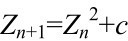
迭代时，开始平面上有两个固定点：c和Z0。若先取Z0=0，然后就有Z1=c，我们将每次Z的位置用亮点表示，也就是说，开始时平面上的原点是亮点。第一次迭代后亮点移动到c，再后我们可以计算Z2，它等于c 2+ c，亮点移动到Z2……经过一次次迭代，代表复数Z的亮点在平面上的位置不停地变化，从Z0开始，Z1,Z2,…,Zn，亮点跳来跳去，很难看出它的跳动有什么规律。但是，我们感兴趣的是当迭代次数K趋于无穷大时，亮点会在哪里？是在有限的范围内转悠呢？还是会跳到无穷远处不见踪影？显然，无限迭代时Z的行为取决于复数c的大小。这样，我们得到了曼德布罗特集的定义：“所有使得无限迭代后的结果保持有限数位的复数C的集合，构成曼德布罗特集（简称M集）。”前面说过，J集的函数值若约束在某一范围内，则可以称之为是连通的，否则为不连通。故曼德布罗特集严谨的定义是：使J集为连通的参数c的集合，即
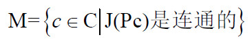
从而J集和M集成了亲戚。也正因为M集是以Z0=0开始迭代的，而J集是以某一不确定的初始值Z0开始迭代的。在图像上可以看清这一点。在M集的计算机图像中，任意一点都有对应的J集，如图11-5所示，中间那个大图是被人称为“数学恐龙”的M集图形，而任意一点都有相应的J集图形。
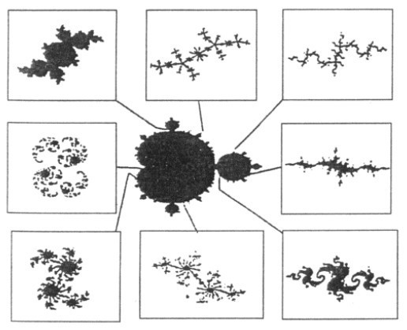
图11-5
最后，引用曼德布罗特在1975年出版的《大自然的分形几何学》一书中精彩的一段话来结束本节。
“云不只是球体，山不只是圆锥，海岸线不是圆形，树皮不是那么光滑，闪电传播的路径更不是直线。它们是什么呢？它们都是简单而又复杂的分形。”
上几节中，我们讲的都是有关分形几何的内容。实际上，在分形数学的大花园中，还有一株鲜为人知的小草——分形数列（也称自相似数列）。下面举几个例子，让大家对它有个基本了解。
（1）克拉科斯基数列
克拉科斯基数列是一个仅由1和2组成的无限数列，通过“自描述”进行定义。它在整数数列大全网站上排名第二，足见该数列在组合数学中的重要性。
它的定义很简单，若把数列中相同的数归为一组，令a(1)=1，a(2)=2，…则a(n)等于第n组数的长度。可以根据这个定义来推算第三项以后的数：例如由于a(2)=2，因此第2组数的长度是2，所以a(3)=2；而a(3)=2就表明第三组数的长度为2，即数列接下来要有两个1，因此a(4)=a(5)=1，所以第四组数和第五组数的长度都为1，因而a(6)=2，a(7)=1，以此类推。它的前几项为
1,2,2,1,1,2,1,2,2,1,2,2,1,1,2,1,1,2,2,1,2,1,1,2,1,2,2,1,1,…
如果我们将相同的数字组成一组，那么可以得到 1,2,2,1,1,2,1,2,2, 1,2,2,1,1,2,1,1,2,2,1,2,1,1,2,1,2,2,1,1,2,1,1,2,1,2,2,1,2,2,1,1,2,1,2,2,…每一组数的个数为1,2,2,1,1,2,1,2,2,1,2,2,1,1,2,1,1,2,2,1,2,1,1,2,1, 2,2,1,1,2,…也就是说，将数列中相同的数以其个数合并，得到的仍将是数列本身，这就是一个分形数列。
随着n的增大，数列中1和2的个数是否趋于相等呢？现在还没有证明出来。最近有研究表明，数列中1和2个数比的极限值可能不是1/2。赫瓦塔尔已经证明了数列中1的密度的上界为0.50084。另外，面对如此简单的数列，目前竟还没有发现可以用解析方式来表达的通项公式。
（2）莫尔斯-瑟厄数列
莫尔斯-瑟厄数列中的每一代都可以由其前代加上它的“补数列”得出。从0开始，第二代补上“1”得到01，第三代看见上一代是01，加上它的“补数列”得到0110，第四代在0110后面加上“补数列”1001，就得到01101001。数列的生长极其迅速，下面是它的第8代。
01101001100101101001011001101001100101100110100101101001100101 101001011001101001011010011001011001101001100101101001011001101001 100101100110100101101001100101100110100110010110100101100110100101 10100110010110100101100110100110010110011010010110100110010110
如果把该数列逐项相间地截取，可以复制出全部数列。与此类似，交替地保留相邻的两项，也能复制出全部数列。有兴趣的读者不妨亲自尝试。
莫尔斯-瑟厄数列有许多出人意料的应用：象棋问题，准晶体理论，合金中的振动态，数学物理，文学组合，微分几何，数论以及连续函数的迭代。E.普洛海特在1851年发表过一篇论文，文末说：“从文献中找寻频频出现的莫尔斯-瑟厄数列，将使你在迷人的数学领域中获得一次愉快的散步。”
（3）黄金数列
这里说的并不是斐波那契数列，而是由下述方法生成的数列。从1、10开始，在后面不断地添加上一行的数字，如第三行加1，成101，第四行在第三行的后面加上第二行的10，成10110，依次类推。
1
10
101
10110
10110101
1011010110110
……
数列中1与0的个数比近似于黄金比例，而且加进去的项数越多，1与0个数的比值越接近
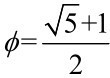
的值，这也是称它黄金数列的原因。在黄金数列中划出任意子数列——例如10 1 10 10 1 10 1 10…，你会发现前后两个10之间的位数为：2122121…（这里计算位数的规则是后一个10中的“1”与前一个10中的“1”相隔的位数）。如果这里的2用1代替， 1用0代替，则黄金数列又会重现，这就显示了在不同尺度下的自相似性，也表明了它确实是一个分形数列。
（4）签名数列
这是一个十分奇怪的数列，先确定一个无理数，例如
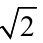
。现在将i，j都从正整数1,2，…，n开始取值，然后计算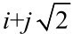
的结果并取近似值，从小到大予以排列。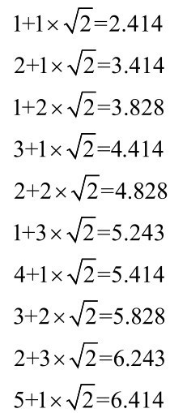
现在取其 i 值，形成数列 1,2,1,3,2,1,4,3,2,5,1,4,3,6,2,5,1,4,7,3,6,2,5, 8,1,4,7,3,6,9,2,5,8,…这就是
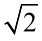
对应的签名数列。如果删去首次出现的每一个整数，你将看到剩余数列同原来的数列一模一样，所以它真的是分形数列啊！那么究竟什么是分形数列呢？曼德布罗特在他的名著《大自然的分形几何》中所给出的定义是：“一个无界集合r(s)如果同s能全等的话，则称它有比值r的自相似性。”试考虑一个整数数列x1, x2, x3, x4, x5,…, 如果x2, x4, x6,…与x1, x2, x3,…是等同的，这说明该数列具有比值为2的自相似性。当然，我们也可以推广：如果存在某个满足关系式1≤d≤r的整数d，使得xd, x（r+d）, x（2r+d）, x（3r+d）, x（4r+d）,…与x1, x2, x3,x4, x5,…等同，可将该数列称为关于比值r的自相似性数列。自然，也可以不拘泥于“比值r”的限制，一切具有“部分同整体相似”的性质的数列都可以称为分形数列。
从几何到代数，分形世界无处不在。